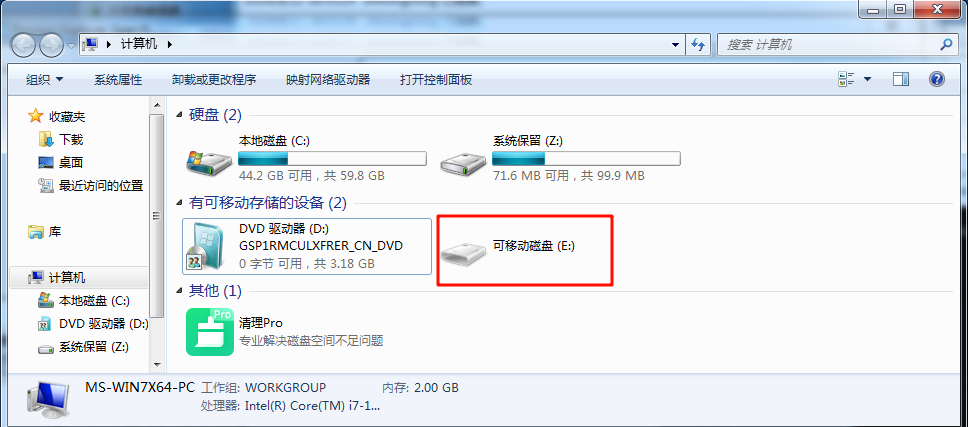
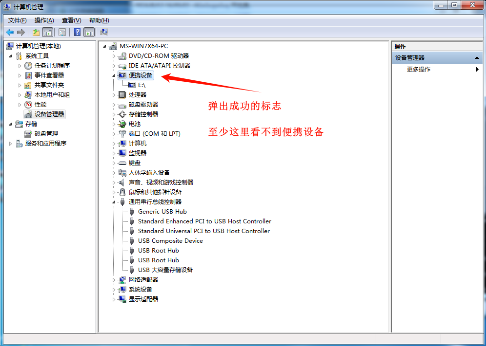
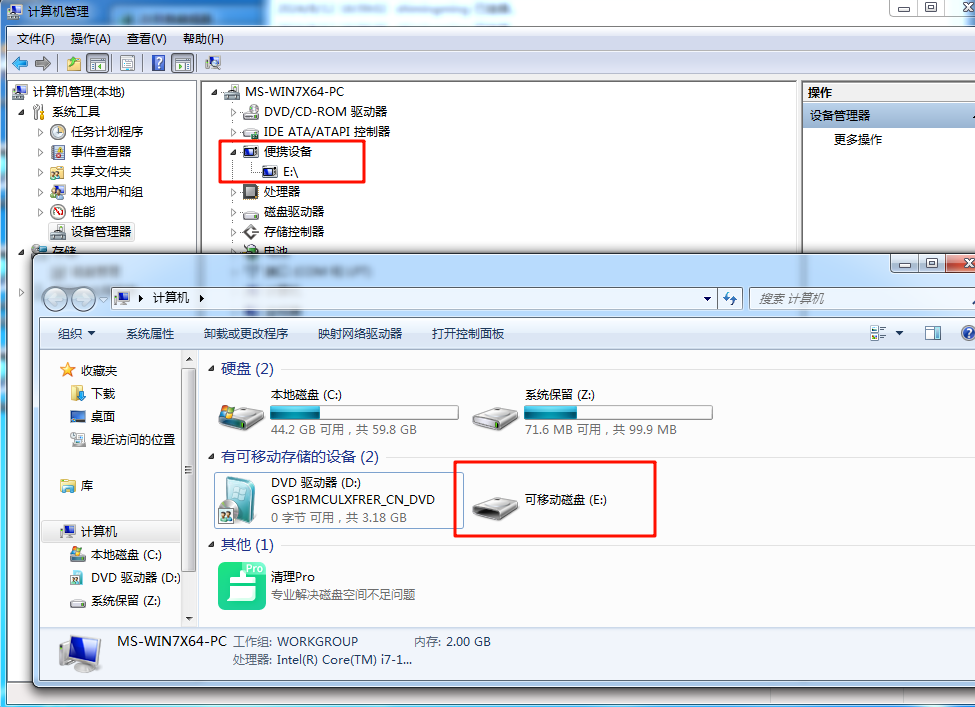

概述：Win7 弹出U盘的方式汇总
参考文章：
- How to Prepare a USB Drive for Safe Removal - CodeProject 参考代码：
- balena-io-modules/mountutils: Cross platform mount related utilities
- imdisk/cli/imdisk.c at 3f4672f83f02d18230bc1d47eb4617d106cc922c · dindinw/imdisk
问题描述
用户环境：Windows 7 x64 旗舰版
客户反馈使用 [U盘小助手] 弹出U盘时报错。弹出失败，每次都需要强制弹出才能弹出U盘，且强制弹出后 [Explorer] 界面仍会显示 U盘 对应的磁盘（没有容量）。但是使用系统的弹出是可以弹出的，且U盘图标弹出逻辑也正常。

)
) 异常情况就是上述两者发生：
)排查思路
句柄未关闭
排查是否有未关闭的句柄导致弹出失败。具体就是使用 [Process Explorer] 查找 [U盘] 句柄。
被拦截
- 查看系统日志
- 查看 API 调用
查看代码
如果以上均排查不出来问题，那就只能看是不是代码写的有问题了。
以上只是常见的排查思路，具体问题具体分析。
弹出调用失败
代码中调用弹出的接口是 CM_Request_Device_Eject_Ex
问题原因
驱动问题，调用 CM_Request_Device_Eject_Ex 弹出时 pVetoType 返回 PNP_VetoIllegalDeviceRequest，表示当前设备不支持。这个在别的机器上是无法复现，截止目前我也不知道这个问题的根源是什么。只能通过别的方式弹出。
目前看只有 CM_Request_Device_Eject_Ex 才能从设备管理器界面弹出U盘。
CMAPI
CONFIGRET
WINAPI
CM_Request_Device_Eject_ExW(
_In_ DEVINST dnDevInst,
_Out_opt_ PPNP_VETO_TYPE pVetoType,
_Out_writes_opt_(ulNameLength) LPWSTR pszVetoName,
_In_ ULONG ulNameLength,
_In_ ULONG ulFlags,
_In_opt_ HMACHINE hMachine
);当 CM_Request_Device_Eject_Ex 接口不支持调用时，常见的方式就是调用 DeviceIOControl 来强制弹出U盘。示例代码如下所示：
STDAPI_(BOOL) EjectVolumeForce(DWORD dwVolLetter)
{
MYTRACE(L"Enter EjectVolumeForce");
WCHAR wszVolume[20] = {};
WCHAR wszVolShort[20] = {};
DWORD dwReturn = 0;
HANDLE hVolume = INVALID_HANDLE_VALUE;
BOOL bRet = FALSE;
StringCchPrintf(wszVolShort, ARRAYSIZE(wszVolShort), L"%c:\\", dwVolLetter);
StringCchPrintf(wszVolume, ARRAYSIZE(wszVolume), L"\\\\.\\%c:", dwVolLetter);
hVolume = CreateFile(wszVolume, GENERIC_READ, FILE_SHARE_WRITE | FILE_SHARE_READ, NULL, OPEN_EXISTING, 0, NULL);
if (hVolume == INVALID_HANDLE_VALUE)
{
MYTRACE(L"ERROR! Can not open volume!\n");
return FALSE;
}
do
{
// 硬盘强制弹出失败率大
if (DRIVE_FIXED == GetDriveType(wszVolShort))
{
MYTRACE(L"DRIVE_FIXED == GetDriveType(wszVolShort)");
bRet = FALSE;
break;
}
MYTRACE(L"GetDriveType(wszVolShort) == %d", GetDriveType(wszVolShort));
// 开始暴力弹出
if (DeviceIoControl(hVolume, FSCTL_DISMOUNT_VOLUME, NULL, 0, NULL, 0, &dwReturn, NULL))
{
DWORD dwTmp = 0;
MYTRACE(L"IOCTL_STORAGE_MEDIA_REMOVAL");
bRet = DeviceIoControl(hVolume, IOCTL_STORAGE_MEDIA_REMOVAL, &dwTmp, sizeof(dwTmp), NULL, 0, &dwReturn, NULL);
MYTRACE(L"IOCTL_STORAGE_MEDIA_REMOVAL, bRet==%d", bRet);
bRet = DeviceIoControl(hVolume, IOCTL_DISK_EJECT_MEDIA, NULL, 0, NULL, 0, &dwReturn, NULL);
MYTRACE(L"IOCTL_DISK_EJECT_MEDIA bRet==%d", bRet);
bRet = DeviceIoControl(hVolume, IOCTL_STORAGE_EJECT_MEDIA, NULL, 0, NULL, 0, &dwReturn, NULL);
MYTRACE(L"IOCTL_STORAGE_EJECT_MEDIA bRet==%d", bRet);
}
// 弹出是否成功
if (!PathFileExists(wszVolShort))
{
DeleteJunctionPoint(dwVolLetter);
bRet = TRUE;
break;
}
else
{
bRet = FALSE;
break;
}
} while (0);
if (INVALID_HANDLE_VALUE != hVolume)
{
CloseHandle(hVolume);
hVolume = INVALID_HANDLE_VALUE;
}
return bRet;
}在大多是机器都是正常的，但是在该客户的机器，调用上述代码后，虽然U盘设备已经移除，但是explorer 仍会有U盘图标显示。对此，我的解决方案就是刷新一下 explorer 界面，让已弹出的U盘不显示。
解决思路
总共试了以下多个 API 尝试通知到 explorer。
API 1 DeleteVolumeMountPointW (不要用)
由于尝试了多个 API 无果后，就尝试了调用了 以下接口，导致了后续一系列问题，在此避坑，建议了解当前函数的使用场景后再决定是否调用。
DeleteVolumeMountPointWAPI 2 DefineDosDevice
DefineDosDeviceA 函数 (winbase.h) - Win32 apps | Microsoft Learn DefineDosDevice 会删除驱动器号。但是在。
void RemoveDrive(char driveLetter)
{
MYTRACE(L"RemoveDrive");
wchar_t deviceName[] = L"\\??\\X:";
deviceName[4] = driveLetter;
// 移除设备挂载点
DefineDosDevice(DDD_REMOVE_DEFINITION, deviceName, NULL);
}API 3 SendMessage
通过 SendMessage 发送 WM_DEVICECHANGE 消息给所有窗口。
void NotifyDeviceRemoval(DWORD dwVolLetter)
{
MYTRACE(L"NotifyDeviceRemoval");
DEV_BROADCAST_VOLUME dbv = { 0 };
dbv.dbcv_size = sizeof(DEV_BROADCAST_VOLUME);
dbv.dbcv_devicetype = DBT_DEVTYP_VOLUME;
dbv.dbcv_unitmask = 1 << (dwVolLetter - L'A');
SendMessage(HWND_BROADCAST, WM_DEVICECHANGE, DBT_DEVICEREMOVECOMPLETE, (LPARAM)&dbv); // 这一步其实已经是可以了，但是这个客户机器还是不行，调用后设备管理器界面会有延迟，但是 explorer 界面会立即刷新。
SendMessage(HWND_BROADCAST, WM_DEVICECHANGE, DBT_DEVICEREMOVECOMPLETE, 0);
}API 4 RunDLL32.EXE
调用 RunDLL32.EXE 来实现弹出。以下两种方法均不可行，有需求可以深入研究下。
void EjectDriveWithShell(char driveLetter)
{
MYTRACE(L"EjectDriveWithShell");
wchar_t command[] = L"RunDLL32.EXE shell32.dll,Control_RunDLL hotplug.dll";
ShellExecute(NULL, L"open", command, NULL, NULL, SW_SHOWNORMAL);
}
// RunDLL32.EXE shell32.dll,SHInvokeCommand 0 "EjectPC" "%c:\\"
void EjectDriveWithShell(char driveLetter)
{
MYTRACE(L"EjectDriveWithShell");
wchar_t command[MAX_PATH] = {0};
wsprintf(command, L"RunDLL32.EXE shell32.dll,SHInvokeCommand 0 \"EjectPC\" \"%c:\\\\\"", driveLetter);
ShellExecute(NULL, L"open", command, NULL, NULL, SW_SHOWNORMAL);
}API 5 重新挂载达到刷新目的
结果：同样不生效，U盘设备移除，但是 Expolorer 图标仍在。
void RemountDrive(char driveLetter)
{
MYTRACE(L"RemountDrive");
wchar_t deviceName[] = L"\\\\.\\X:";
deviceName[4] = driveLetter;
HANDLE hDevice = CreateFile(deviceName, GENERIC_READ, FILE_SHARE_READ | FILE_SHARE_WRITE, NULL, OPEN_EXISTING, 0, NULL);
if (hDevice != INVALID_HANDLE_VALUE) {
DWORD bytesReturned;
DeviceIoControl(hDevice, FSCTL_DISMOUNT_VOLUME, NULL, 0, NULL, 0, &bytesReturned, NULL);
DeviceIoControl(hDevice, IOCTL_STORAGE_EJECT_MEDIA, NULL, 0, NULL, 0, &bytesReturned, NULL);
CloseHandle(hDevice);
}
// 重新挂载驱动器
hDevice = CreateFile(deviceName, GENERIC_READ, FILE_SHARE_READ | FILE_SHARE_WRITE, NULL, OPEN_EXISTING, 0, NULL);
if (hDevice != INVALID_HANDLE_VALUE) {
CloseHandle(hDevice);
}
}API 5 BroadcastSystemMessage
调用 BroadcastSystemMessage 广播通知设备改动
结果：不生效，图标在、设备也在
void BroadcastDeviceChange(DWORD dwVolLetter)
{
// 模拟设备移除消息
DEV_BROADCAST_VOLUME dbv;
dbv.dbcv_size = sizeof(DEV_BROADCAST_VOLUME);
dbv.dbcv_devicetype = DBT_DEVTYP_VOLUME;
dbv.dbcv_reserved = 0;
dbv.dbcv_unitmask = 1 << (dwVolLetter - L'A'); // 假设 E: 是 U 盘的盘符
dbv.dbcv_flags = DBTF_MEDIA;
// 向系统广播设备变更消息
BroadcastSystemMessage(BSF_IGNORECURRENTTASK | BSF_POSTMESSAGE, BSM_ALLCOMPONENTS, WM_DEVICECHANGE, DBT_DEVICEREMOVECOMPLETE, (LPARAM)&dbv);
}API 6 刷新设备列表
调用 SetupDI* 接口刷新设备列表。
结果：无效。因为设备并没有实际弹出，所有刷新后设备列表还是会有便携设备存在。
void RefreshDevice(LPCWSTR deviceInstanceId)
{
MYTRACE(L"RefreshDevice");
HDEVINFO deviceInfoSet = SetupDiGetClassDevs(NULL, deviceInstanceId, NULL, DIGCF_ALLCLASSES | DIGCF_PRESENT);
if (deviceInfoSet == INVALID_HANDLE_VALUE)
{
return;
}
SP_DEVINFO_DATA deviceInfoData;
deviceInfoData.cbSize = sizeof(SP_DEVINFO_DATA);
if (SetupDiEnumDeviceInfo(deviceInfoSet, 0, &deviceInfoData))
{
SetupDiCallClassInstaller(DIF_PROPERTYCHANGE, deviceInfoSet, &deviceInfoData);
}
SetupDiDestroyDeviceInfoList(deviceInfoSet);
}API 7 刷新 Explorer 界面
VOID RefreshFolderViews(UINT csidl, LONG wEventId)
{
LPITEMIDLIST pidl;
if (SUCCEEDED(SHGetSpecialFolderLocation(NULL, csidl, &pidl)))
{
// SHChangeNotify(SHCNE_UPDATEDIR, SHCNF_IDLIST, pidl, 0);
SHChangeNotify(wEventId, SHCNF_IDLIST|SHCNF_FLUSH, pidl, 0);
CoTaskMemFree(pidl);
}
}最终解决方案
调用 DeivceIOControl 强制弹出，然后通知界面刷新。
界面刷新调用了 SendMessage 和 SHChangeNotify，代码如下所示：
NotifyDeviceRemoval(dwVolLetter);
SHChangeNotify(SHCNE_DRIVEREMOVED, SHCNF_PATH, wszVolShort, NULL);
SHChangeNotify(SHCNE_DRIVEADD, SHCNF_PATH, wszVolShort, NULL);事实上，只要 CM_Request_Device_Eject_Ex 调用成功，那图标缓存和设备列表都会更新，但是调用失败的时候就比较复杂，尤其是返回 PNP_VetoIllegalDeviceRequest 时，没有合适的方法能从设备列表移除设备。
备忘
WCHAR wszDrivePoint[3] = L" :";
wszDrivePoint[0] = dwVolLetter;
if (!DefineDosDevice(DDD_REMOVE_DEFINITION | DDD_EXACT_MATCH_ON_REMOVE, wszDrivePoint, NULL))
MYTRACE(L"DDD_REMOVE_DEFINITION bRet==%d", GetLastError());